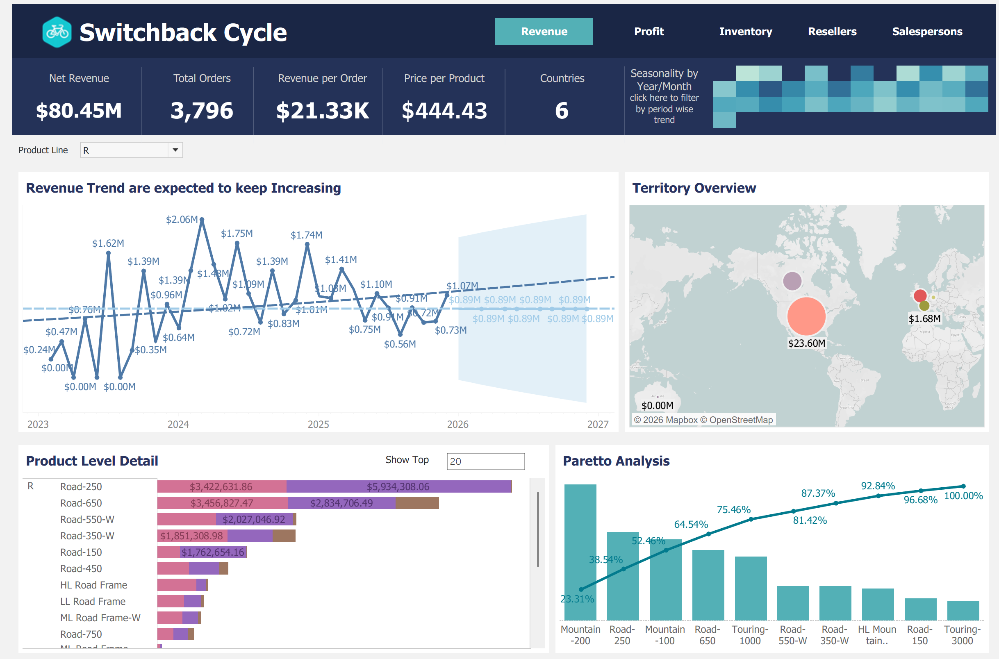
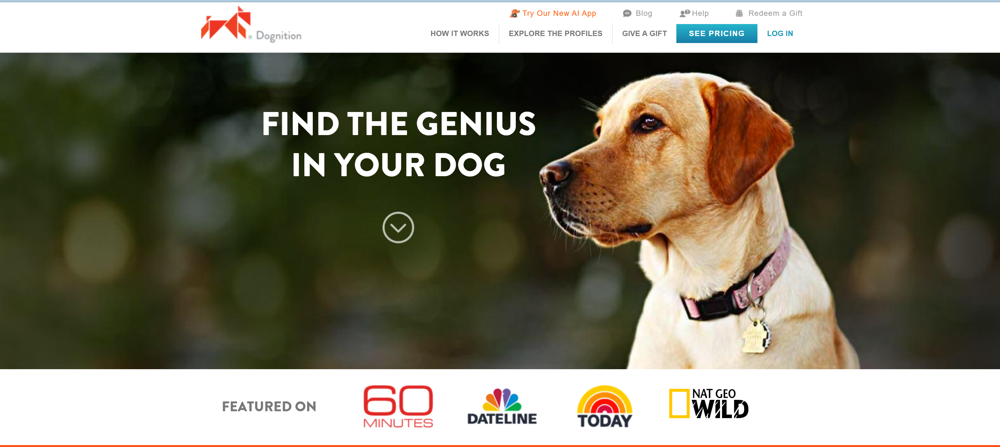
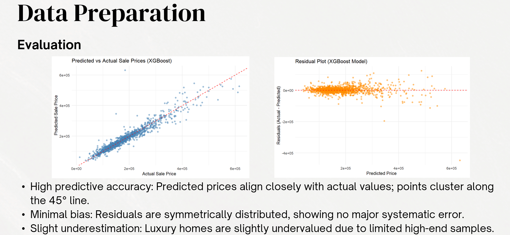

Tableau Dashboard
Revenue Intelligence Dashboard
Contributed to a multi-module Tableau dashboard analyzing ~$80M in revenue across product, geography, inventory, and sales performance to support business decision-making.
Open project →Analytics • Machine Learning • Business Insights
I am currently a student in Duke Fuqua's MQM: Business Analytics program, with a concentration in strategy. I'm interested in data analytics, statistical modelling, and business problem-solving. My work combines dashboards, SQL analysis, predictive modeling, and strategy-focused research.
Projects
These projects show my range across visualization, SQL analysis, predictive modeling, consulting, and deep learning.

Tableau Dashboard
Contributed to a multi-module Tableau dashboard analyzing ~$80M in revenue across product, geography, inventory, and sales performance to support business decision-making.
Open project →
SQL Analysis
Performed exploratory SQL analysis using joins, CTEs, and window functions to uncover customer behavior patterns and retention opportunities.
Open project →
Machine Learning
Built a predictive modeling pipeline using housing data to estimate fair market value and support mortgage risk assessment and loan underwriting decisions.
Open project →Strategy / Consulting
Developed a sustainability-led differentiation strategy for e.l.f. Cosmetics in a saturated, price-sensitive market.
Open project →Deep Learning
Compared a baseline CNN and fine-tuned ResNet18 to classify breast ultrasound images for decision-support use cases.
Open project →About
I enjoy building data-driven projects that connect technical work to practical outcomes. Whether I am designing a dashboard, writing SQL, or training a predictive model, I focus on making the analysis clear, useful, and decision-ready.
Skills
Contact
Email: shreya.nair@duke.edu
Phone: 919-641-5944
LinkedIn: linkedin.com/in/shreyan1122
Download Resume